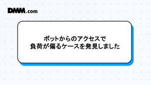
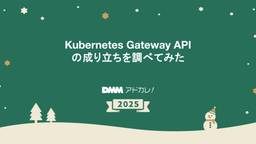
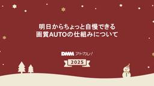
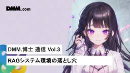
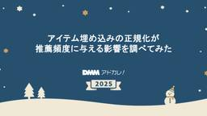
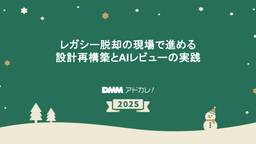
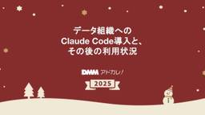
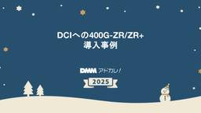
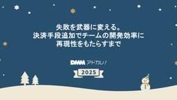
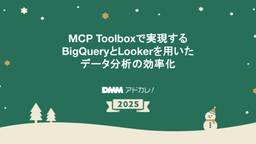

DMM Developers Blog
https://developersblog.dmm.com/
DMM Developers Blog
フィード

ボットからのアクセスで負荷が偏るケースを発見しました
DMM Developers Blog
はじめに 急にレスポンスタイムが悪化した 問題のリクエストの特定を試みるが失敗した スティッキーセッションを無効化するため、Blue/Greenデプロイメントへ移行する ECSの組み込みBlue/GreenデプロイメントはDMMブックスと相性が良くない ALBのリスナールールが複雑な場合はトラフィック切り替えに独自のLambdaを実装する必要がある まとめ はじめに こんにちは。ITインフラ本部 SRE部のシュウです。 今回はDMMブックスで発生したスティッキーセッションに関連するパフォーマンス問題の調査と対応について紹介します。 急にレスポンスタイムが悪化した New RelicのAPMでD…
1日前

Kubernetes Gateway API の成り立ちを調べてみた 1
1
DMM Developers Blog
はじめに Ingress が直面した「構造的課題」 Ingress の果たした役割とその後の課題 1. 「最低限の共通機能」設計の限界 2. 「アノテーション地獄」が招いた移植性の低下 3. 運用上の摩擦：役割と責任の混在 KubeCon 2019：API 再構築という決断 なぜ「Ingress v2」では駄目だったのか 1. 「Ingress（入り口）」という概念の限界 2. 下位互換性の呪縛 「Service APIs」から「Gateway API」へ Gateway API の核心：「ロール指向設計」による解決 ロールとリソースの分離：権限境界の明確化 移植性の回復と表現力の向上 Kub…
2日前

明日からちょっと自慢できる画質AUTOの仕組みについて
DMM Developers Blog
初めに 画質AUTOの仕組み スムーズな画質変更への工夫 実際のコードを見ながら処理を追ってみる まとめ・宣伝 初めに この記事は DMMグループ Advent Calendar 2025 の12日目の記事です。 こんにちは。メディア基盤開発部でフロントエンドエンジニアをしている今西(@nisshii0313)です。主に動画再生プレイヤーまわりのコンポーネントの開発および保守・運用をしています。 さて、弊社に限らず、多くの動画配信サービスでは画質設定に"AUTO"や"自動"という項目があります。 選択すれば自動でHDや4K等の画質を設定してくれる便利さから、使用されている方も多いのではないでし…
2日前

DMM.博士 通信 Vol.3 - RAGシステム環境の落とし穴 1
DMM Developers Blog
はじめに 前回のおさらい 困ったこととは... RAGシステム構成 問題の発生順序 なぜ発生するのか ローカル開発環境との関係 おわりに はじめに DMM.博士通信の3回目の投稿になります。前回の投稿が2025年1月でしたので随分間が空いてしまいました。前回までの流れは以下の記事をお読みいただければと思います。 "42日で立ち上げた社員向け生成AI チャットボット「DMM.博士」。AI初体験の社員に、何を提供するべきか" "DMM.博士 通信 Vol.1 - OpenAIで構築した社内ChatGPTに業務フローを任せるまで" 'DMM.博士 通信 Vol.2 - 分散型RAGサテライトシステム…
2日前

アイテム埋め込みの正規化が推薦頻度に与える影響を調べてみた
DMM Developers Blog
はじめに 背景: 正規化の有無で内積ベースの類似度は変わる → レコメンド結果はどう変わる？ DMM のレコメンド - Two-Tower モデルによるレコメンド ベクトルの長さは推薦頻度に影響する 単純なモデルで影響を調べてみた 実験設定 比較するモデル 結果: アイテムの頻度と埋め込みベクトルについて可視化 アイテムの登場頻度 各モデルについて可視化 base-model l2norm-model adam-model samplingprob-model 考察: ベクトルの長さは推薦頻度に影響する ノルムのばらつきが小さいほどカバレッジは上昇する サンプリングバイアスを考慮すると、人気作…
3日前

レガシー脱却の現場で進める設計再構築とAIレビューの実践
DMM Developers Blog
はじめに レガシー課題の整理から始まった、持続可能な設計への再定義 共通の設計言語をつくる 設計標準の軸 迷わないルールが、設計を自由にする 設計標準をAIが読める形に アーキテクチャ審議会の立ち上げ：個別移行から全体最適へ 目的は正解の強制ではなく、考え方の共有 議論テーマと成果 イベントストーミングによる共通理解の再構築 AIツールと共存するレビュー文化 まとめ 宣伝 はじめに この記事は、DMMグループ Advent Calendar 2025 の11日目の記事です。 デジタル作品を販売するオンラインECサービスでバックエンドエンジニアをしているyachiyと申します。 私が担当している…
3日前

データ組織へのClaude Code導入と、その後の利用状況
DMM Developers Blog
はじめに 導入の概要：Google Cloud基盤を活用した運用 導入経路の詳細 予算管理の詳細 チームでの活用状況 費用管理実績 ✅ 活用できているケース ⚠️ 活用が難しかったケース データ分析特有の課題と技術的解決策 課題1：Jupyter Notebook (.ipynb) のトークン爆発 解決策：カスタムMCPサーバーによる前処理 課題2：BigQueryでのデータ抽出加工時の考慮漏れ 解決策：プロンプトの工夫 まとめ はじめに はじめまして。データサイエンスグループで機械学習エンジニアをしている25新卒の森です。 私は主に機械学習を用いた検索ランキング改善に携わっています。 今回は…
4日前

DCIへの400G-ZR/ZR+導入事例
DMM Developers Blog
はじめに DCI（Data Center Interconnection:データセンター間相互接続) 可用性 拡張性 IP over DWDM 400G-ZR/ZR+ 波長 送信パワー FEC（前方誤り訂正） 消費電力 発熱対策 Transceiverの選定 実環境への導入（＆トラブル） OSNR（光信号対雑音比） トラブルシュート 振り返り 最後に はじめに こんにちは、ITインフラ本部インフラ部ネットワークグループ NAD（Network Architecture Design）チームの大城です。 NADチームは高品質かつ効率的なネットワーク設計・構築をすることで、全ユーザーおよび事業サー…
4日前
アクティべ式・心理的安全性のつくり方——今日から試せる3つの習慣 多拠点・リモートワークでも心理的安全性を高める方法とは——
DMM Developers Blog
アクティベーションチームについて チーム活動の弊害と課題 多拠点・非同期の壁 個人依存と残業前提の進め方 プランニングの曖昧さ やってよかった習慣 3選 1. スクラムイベントの改善 1週間スプリントでの高速PDCA 毎回のレトロスペクティブで「TRY」を実施し、課題を放置しない デイリースクラムの積極的な改革 メンバーのその日の調子を共有 Good & Newの導入 2. いつでもチームで会話できるリモートワークの仕組み化 「仮想オフィスGather」が変えたこと 「近くに相手がいる」という感覚が、話すハードルを下げる 3. ペアワーク・モブワークの意識づけ ペアワーク・モブワークとは？ 「…
5日前
GoのSCA何使おうか悩んでいる人へ
DMM Developers Blog
はじめに 背景 Nancyとは？ Nancyのメリット Nancyのデメリット govulncheckとは？ govulncheckのメリット govulncheckのデメリット 検証 検証項目 検証環境 脆弱性の選定根拠 1. 実行パスに含まれる真正な脅威（True Positiveのベンチマーク） 2. 実行パスに含まれない潜在的な脆弱性（False Positiveのベンチマーク） 検証準備 modulesの変更 codeの変更 GitHub Actions ワークフローの作成 検証結果 考察 まとめ はじめに こんにちはこんばんは！プラットフォーム開発本部認可チームの日比です。 プラッ…
5日前

失敗を武器に変える。決済手段追加でチームの開発効率に再現性をもたらすまで
DMM Developers Blog
はじめに 取り組んだこと 過去の過ちを繰り返さない 属人化からの脱却 停滞を素早く検知して対処する AIエージェントの活用 まとめ これからの展望 最後に はじめに こんにちは、DMM.com の西です。 普段は決済関連のプロダクトの機能開発、運用業務に携わっています。 今年の9月に、DMM.comではあと払いペイディでの支払いに対応しました。 合同会社DMM.comが運営するサービスで ペイディの直接決済が可能に 私はこの開発を推進する立場でしたが、チーム全体の集合知が問題の早期発見・解決に大きな役割を果たしていることを強く実感しました。 DMM.comでは、ニーズやトレンドに合わせ、スピー…
6日前

MCP Toolboxで実現する、BigQueryとLookerを用いたデータ分析の効率化
DMM Developers Blog
1. はじめに 2. 背景 データ分析における課題 3. MCP Toolbox for Databasesを導入 Toolboxの概要 BigQuery / Lookerで利用可能なツール BigQueryで利用可能なツール Lookerで利用可能なツール セットアップ 動作確認 4. MCP Toolbox for Databasesの業務活用 セキュリティ・コストのルールプロンプトの作成 ステップバイステップな分析のためのプロンプトの作成 分析結果テンプレートの作成 5. 導入による効果 6. 今後の展望 継続的にウォッチしたいデータの定期分析レポートの自動生成 非エンジニアが気軽に分析…
6日前

AIで本当に開発効率よくなった？私たちのチームでのAI活用事例とその効果
DMM Developers Blog
1. はじめに 2. 開発フローの全体像 上流工程（PRD・DesignDoc）はAI活用を検証中 AI活用のアプローチ：Cursorと「ルール」 3. API定義書の作成・DB定義書の作成 4. ドメインモデリング 4-1. Before：ゼロからの作図と議論の往復で消耗 4-2. After：ドキュメントとルールを渡すだけで設計図が生成される 5. 実装 5-1. レイヤーごとに「設計書」と「ルール」を渡す 1. ドメイン層の実装 2. Usecase層の実装 3. インターフェース層・インフラ層・テストの実装について 5-2. AI導入効果：実装の思考プロセスが変わった 6. 検証 6-…
9日前
決済手段追加の開発期間を半分にして欲しいと頼まれたときの話
DMM Developers Blog
はじめに 背景 期間を短縮するためにやったこと １．大前提として、要件の最小化は必須（王道） ２．決済領域単独で開発進行できれば省略できる工程がありそう ３．過去実績を鑑みると、各工程の効率化は必須 設計のスリム化 結合テストの最適化 ４．大きな手戻りが発生したら終わる 既存決済手段のユースケースを用いたGap分析 エラーコードレベルでIFを網羅的に整理 結末 雑感 さいごに はじめに DMMのプラットフォーム開発本部/第2開発部/プロジェクト推進グループのManagerをしております、星野と申します。 私のDMM歴はまだ浅く、この12月でようやく１年半ほどになります。 また、私が join …
9日前
BigQuery自動キャンセルで社内データ基盤のコスト最適化
DMM Developers Blog
1. はじめに 2. 背景と目的 3. 機能概要 3.1 Airflow を中心にした実装 3.2 キャンセル処理の流れ 3.3 キャンセル後の通知 3.4 キャンセル除外対象 4. 運用の成果 5. まとめ 1. はじめに こんにちは。開発統括本部 データ基盤開発部の林 沛萱（リン ペイ シュェン）です。 私たち DMM グループでは社内向けにデータ分析を効率化するための基盤として「i3 データ基盤」を提供しています。「i3 データ基盤」という名称には、integration（統合）、insight（洞察）、intelligence（知見）の 3 つの意味が込められており、社内データを統合し…
10日前
DDD経験者がEvent Sourcingで躓いた話
DMM Developers Blog
DDD経験者がEvent Sourcingで躓いた話 はじめに 1. 背景 何が変わったのか（対比表） 2. 私が直面した2つの大きな違い 2-1. 大きな違い①：状態永続化モデル State Sourcing（従来の方法） Event Sourcing（今回の現場での方法） 私がつまずいたポイント Event Sourcing での「何を保存するか」 私が陥った誤解 実際の仕組み なぜ Snapshot だけではダメなのか（なぜイベントも必要か） 2-2. 大きな違い②：処理制御モデル 同期的処理（従来の方法） Temporalによる非同期オーケストレーション（今回の現場での方法） 私がつま…
10日前
【イベントレポート】ただ断るだけじゃない。飯沼さんに聞く「Noを伝える技術」
DMM Developers Blog
なぜ「No」が言えないのか 「No」の目的は、断ることではなく「より良いYes」を引き出すこと 「No」を伝えるのは「勇気」ではなく「戦略」 「No」を直接使わない。「Not」で分解する伝え方の技術 相手から「No」と言われたら、「牛歩」で進める 質疑応答（Q&A） Q: プロダクトマネージャーとしてここはさすがに譲っちゃだめと思う点があった時、Notで分解する以外に意識されたり実践されていることはありますか？ Q: シニア PdM から思考回路を盗みたい。相手から思考プロセスを開示させるための質問やコミュニケーション方法があれば教えて欲しいです。 Q: プロジェクトメンバーに対する厳しさと優…
10日前
コンタクトセンターにリアルタイム文字起こしを導入した話
DMM Developers Blog
はじめに 背景と課題 従来の文字起こし処理の課題 従来の方式：Azure Speech-to-Textの採用理由 1. リアルタイム性の欠如 2. 処理回数とコストの問題 解決策の概要 技術的な実装のポイント 1. Contact Lensによる文字起こし処理の統合とコスト削減 Contact Lensの選定理由 呼び出し回数削減によるコスト削減と利便性の向上 2. AWS AppSync EventsによるマネージドWebSocketの実装 AppSync Eventsを選んだ理由 システム構成概要 文字起こし結果の利用 3. Step Functionsによる並列処理 並列処理の構成 Dy…
11日前
続・決済基盤の技術的負債に向き合う
DMM Developers Blog
はじめに Phase1: 基盤構築から機能実装へ（2025年1月〜7月） やったこと わかったこと できたこと Phase2: 一般アカウント移行への挑戦（2025年8月〜2026年2月、進行中） 取り組んでいること これまでにわかったこと 今後の方針 技術的な学び Temporalによる分散トランザクション管理 CQRS & Event Sourcingの実装 Observabilityの重要性 組織的な学び ADRによる設計決定の文書化 モブプログラミングによる知識共有 残された課題と今後の展望 正直に共有すべき課題 最後に 関連キーワード はじめに プラットフォーム開発本部 第2開発部 …
11日前
Datadogダッシュボードを目的別に再設計した話
DMM Developers Blog
はじめに 背景 多すぎるモニターと機能しないダッシュボード 目的別ダッシュボードの設計 第1階層：インシデント初動調査用ダッシュボード 問題発生の即時確認とサービス健全性の判断 相関関係によるボトルネックの切り分け ドリルダウンへの誘導とコンポーネントの主要メトリクス確認 第2階層：ドリルダウン調査用ダッシュボード 健全性の再確認 ノード・Podなど細かい単位での分解 イベントとメトリクスの相関分析 第3階層：振り返り用ダッシュボード SLOバジェットによる目標達成度の確認 アラート件数と主要メトリクスの制限 最後に はじめに この記事はDMMグループ Advent Calendar 2025…
12日前
AIが教えてくれたコードレビューの本質 ― 意図共有という学び ―
DMM Developers Blog
はじめに AI導入と課題 自動化の成功例 コードレビュー自動化の挑戦 プロンプト例 意図を共有する ケース1：判断の背景を共有する ケース2：未来を見据えた意図共有 生成AIの気づき 私たちの学び これから はじめに こんにちは。ユーザーレビューグループ（URG）の松井です。 私たちは、DMMで投稿されるレビューを処理するシステムを開発しています。 レビューを支える基盤では、常に品質と速度の両立が求められています。 2025年は、DMM全体でAIエージェント導入が急速に進んだ年でした。 AIエージェントによるコード生成が増え、コードレビューの負荷も一気に高まっていました。 そこで「AIで支援で…
12日前
Proxmox VEで学ぶcloud-init
DMM Developers Blog
はじめに cloud-initとは Proxmox VEで簡単にcloud-initを体験してみよう cloud-initイメージの取得 テンプレートの作成 インスタンスのクローン cloud-initのパラメーターを変更する cloud-initの仕組み cloud-config User-data formats Modules cloud-initステージ遷移 データソースとランタイム構成ファイル cloud-initをカスタムしてみよう cloud-initのデバッグ /var/log/cloud-init-output.log /var/log/cloud-init.log Loca…
13日前
『がんばらない運営』ー DMMのPMイベント運営の秘訣 ー
DMM Developers Blog
はじめに 「プロジャミ!!」というPMイベントを社内で運営しています プロジャミ!!とは 「コミュニティ」と「イベント」の違いを意識する 社内イベント運営時に持つべきたった2つのルール ルール1. とにかく定期で継続 ルール2. 人集めに集中 その他は『がんばらない運営』がモットー 1. テーマ設定をがんばらない 2. 1開催ごとの成果のためにがんばらない 3. 演出をがんばらない 『がんばらない』を、頑張る これから僕が頑張ること 最後に はじめに 合同会社DMM.com、アルファ室プロダクトマネージャーの小島と申します。アルファ室とは、プラットフォーム横断のPM組織です。 「社内でイベント…
13日前
Observability Conference Tokyo 2025に登壇しました！オブザーバビリティ成熟度モデルの実践事例を共有
DMM Developers Blog
はじめに Observability Conference Tokyo 2025とは 発表内容 発表資料と詳細ブログ 当日の様子：会場の熱気と参加者の反応 Ask the Speakerコーナーでの対話 SNSでの反響と外部からの評価 登壇を通じた学びと気づき 発表準備での苦労と工夫 本番で意識したポイント アウトプットで見えた改善点 「評価は出発点である」という哲学が生まれた背景 今後の展望：継続的な改善とコミュニティへの貢献 登壇を踏まえた具体的な次のステップ 組織とコミュニティへの貢献 はじめに こんにちは。ITインフラ本部 SRE部の庭野です。 2025年10月27日（月）に開催された…
1ヶ月前
DMMデータサイエンスグループがRecSys 2025に参加しました！
DMM Developers Blog
はじめに RecSys 2025 概要 開催概要 印象に残ったセッション・発表 菊谷パート LONGER: Scaling Up Long Sequence Modeling in Industrial Recommenders 概要 グローバルトークン トークンマージ Hybrid Attention 推論時のKVキャッシュ 実験 感想 寺井パート PinFM: Foundation Model for User Activity Sequences at a Billion-scale Visual Discovery Platform 概要 感想・考察 土岐パート GenSAR: Uni…
1ヶ月前
Think! FrontEnd #8 開催レポート
DMM Developers Blog
はじめに Think! FrontEnd とは？ 研修で学んだリクエスト毎にページのレンダー方法を変える小技 TypeScriptで型レベルJSONパーサー Marpで学ぶHTML/CSS パネルディスカッション 懇親会 おわりに はじめに こんにちは！「Think! FrontEnd」運営の井内（@pengin_engineer ）です。普段はライブコミュニケーションサービスのフロントエンド開発を担当しつつ、新卒研修や一部の技術イベントの運営にも携わっています。 今回は、先日 9/18(木)に開催された「Think! FrontEnd by DMM #8」について、開催レポートをお届けします…
1ヶ月前
Devin×Claudeで実現する持続可能なAI開発体制
DMM Developers Blog
はじめに 1. Devin導入期：生産性の爆発的向上 自律型AIエージェントの可能性に着目 驚異的な成果 具体的な工数削減効果 2. Devin運用期：PRレビューボトルネックの発生 生産量増加の副作用 ボトルネックの実態 根本原因の分析 持続可能な開発体制の必要性 4. 改善期：持続可能なAI開発体制の構築 Claude Code導入：PRレビューボトルネックの解決 自動レビュー判定ワークフローの構築 工夫した点：コンテキストの使い回し設計 Devin Playbooks活用：コンテキストの自動育成 完全自動化ワークフローの実現 持続可能性の実現 まとめ Devin活用の本質的な価値 学んだ…
1ヶ月前
DMM の Turtle Design System ポータルサイト β 版を公開しました
DMM Developers Blog
はじめに デザインシステムとは？ これまでの歩み さらなる価値提供のためにチャレンジできないか？ 最高のフロントエンドアプリケーションを最速で はじめに こんにちは！わたしたちは DMM.com の プラットフォーム開発本部 > Developer Productivity Group > Turtle チームです。 わたしたちのチームでは、横断チームとして社内の開発生産性を高めるための仕組みづくりを行っており、その一環でデザインシステム『Turtle Design System』を開発・運用しています。 この度、これまでに蓄積したナレッジをより多くの組織に活用してもらうため、2025年10月…
2ヶ月前
AIが変える、人事評価の未来 〜LLM活用でもっと『人』の時間を創り出す挑戦〜
DMM Developers Blog
充実した評価制度をより効果的に運用するための挑戦 LLMで解決を検討：議事録から評価レポートを自動生成する4ステップ Step 1: AIによる議事録の自動作成 Step 2: 評価項目に関連する情報をAIが自動抽出 Step 3: 1on1での内容確認と認識合わせ Step 4: 月次実績として記録・蓄積 具体的なプロンプトと出力サンプル サンプルプロンプト（簡略版） 出力サンプル（架空の人物での例） AI導入がもたらす5つの効果：効率化の先にある未来 導入に向けた検討事項と今後のアクション おわりに こんにちは！DMM.com プラットフォーム開発本部 第1開発部 ユーザーレビューグループ…
2ヶ月前
AIエージェントで生産性は上がっていますか？DMMプラットフォーム基盤のエンジニアに聞いた生産性の変化
DMM Developers Blog
1. AIエージェント導入の期待と現実のギャップ 2. 調査概要と主要な発見 調査結果 3. 組織とシステム構造によるAIエージェントとの相性の違い パターン1. 「新規開発 × 少人数」 現実的な生産性向上の上限と人間の限界 パターン2. 「歴史があるシステム × 大人数」 「説明責任」が果たせない盲目的なプルリクエストは遅延と成長の阻害要因 4. 「銀の弾丸」ではないAIエージェントの正しい位置づけ 一周回って、エンジニアのスキルが重要になる 5. DORA 2025レポートが示す現実 AIは「増幅器」である AIが「組織の鏡」である理由 6. おわりに こんにちは。DMM.comでプラッ…
2ヶ月前